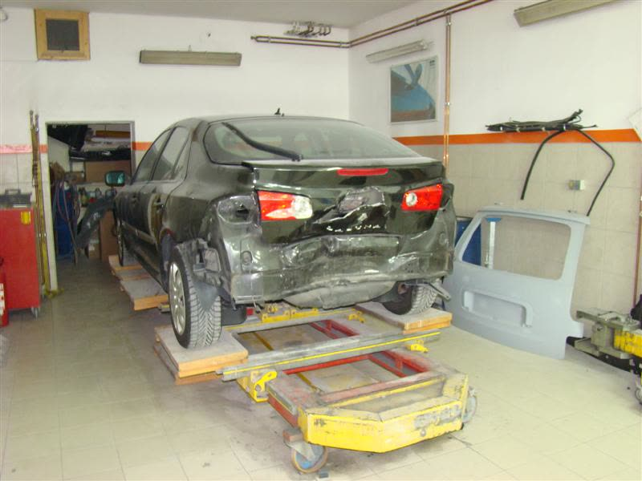
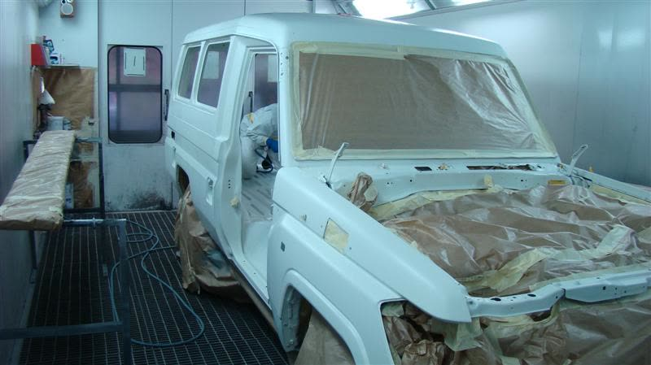
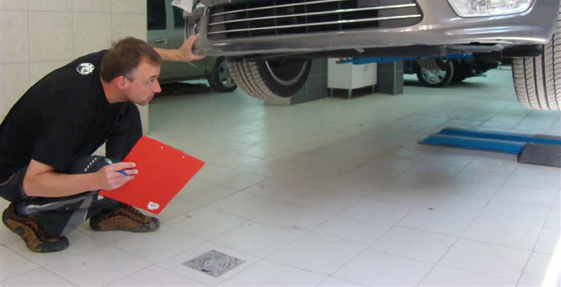
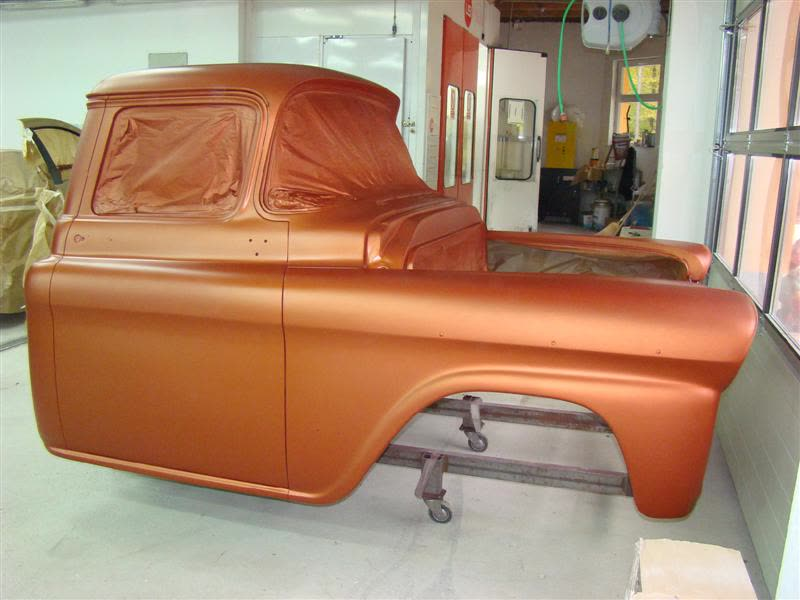
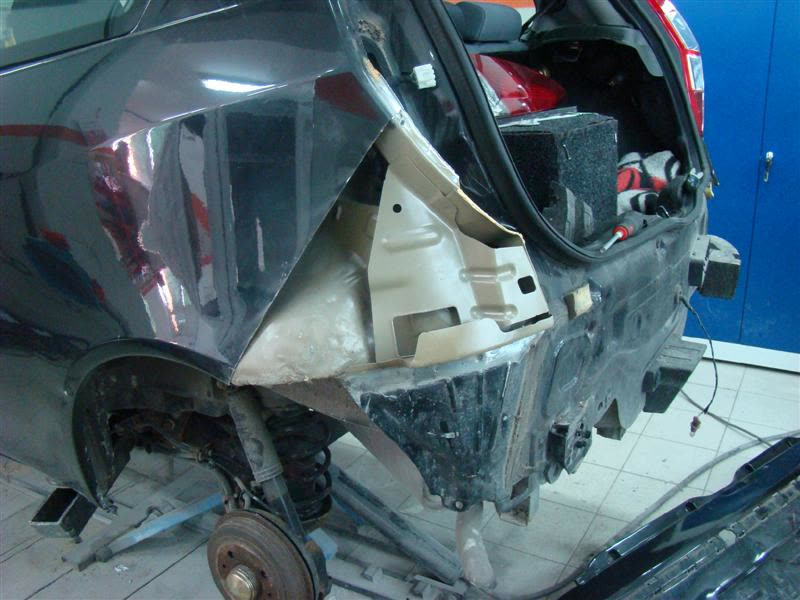

01
Avtokleparstvo
Kleparska dela opravljamo na ravnalni mizi vrhunske znamke Spanesi. Vaše poškodovano vozilo bomo kar se da temeljito popravili.

Avtokleparstvo in avtoličarstvo, Podkraj pri Velenju
Kleparska dela na ravnalni mizi Spanesi, lakiranje v komori USI-Italia z vodnimi laki DuPont. Pogodbeni izvajalec za zavarovalnice: prijavo škode in cenitev uredimo pri nas.
Marko Korelc je na samostojno obrtniško pot stopil v začetku leta 1999. Vpis v register 1. 2. 1999.
Lakiramo v lakirni komori USI-Italia z vodnimi laki, kleparska dela opravljamo na ravnalni mizi Spanesi.
Pogodbeni izvajalec del za večino znanih zavarovalnic. Prijave in cenitve škod iz avtomobilskega kaska opravimo pri nas.
Storitve
Od vleke s kraja nesreče do cenitve, kleparskega popravila in lakiranja. Če je potrebno, vam ob popravilu zagotovimo nadomestno vozilo.

Kleparska dela opravljamo na ravnalni mizi vrhunske znamke Spanesi. Vaše poškodovano vozilo bomo kar se da temeljito popravili.

Lakiranje v lakirni komori USI-Italia z vodnimi laki DuPont. Osebna, dostavna in tovorna vozila.

Opravljamo prijave in cenitve škod iz naslova avtomobilskega kaska. Za ostale zavarovalnice pripravimo dokumentacijo, po dogovoru vozilo peljemo tudi na cenilno mesto.
Ob zahtevnejših okvarah in nezgodah vozilo pripeljemo do naše delavnice ali po vaši izbiri. Vleko izvajamo s svojim vozilom in ustrezno opremljeno prikolico.

Vetrobransko steklo je sestavni del trdnosti vozila. Zamenjamo ga z originalnim delom oziroma z enakovrednim steklom.
Ekološko, brezprašno peskanje na terenu. Odstranjevanje barv, lakov, epoksi smol, lepil in rje. Pridemo pripravljeni, neodvisni od vira vode ali elektrike.
Iz naše lakirnice
Kabina starodobnega tovornjaka: v temeljni barvi in po lakiranju v naši komori. Fotografije iz naše delavnice.



O podjetju
Marko Korelc se je po osnovni šoli najprej izučil za orodjarja, ker so ga veselila dela, ki zahtevajo ročne spretnosti. Z dodatnimi izpiti je pridobil izobrazbo avtoličarja, z redno zaposlitvijo prakso in izkušnje, v začetku leta 1999 pa je krenil na samostojno pot.
Dobro opravljeno delo je najboljša reklama za našo dejavnost.
Po navedbah na njihovi strani je bilo v delavnici zaposlenih šest ljudi: poleg Marka kot strokovnega vodje in nosilca obrti še dva avtoličarja, pomočnik avtoličarja, klepar in tajnica. Prepoznavnost si ustvarjamo predvsem s priporočili od ust do ust.
Tudi prosti čas je povezan z avtomobilizmom: Marko se ljubiteljsko udeležuje tekmovanj državnega prvenstva v spretnostnih vožnjah na terenu.


Kako poteka
041 738 125. Ob zahtevnejših okvarah in nezgodah vozilo pripeljemo k nam s svojim vozilom in prikolico.
Prijavo in cenitev škode iz kaska opravimo pri nas, za ostale zavarovalnice pripravimo dokumentacijo.
Kleparska dela na ravnalni mizi Spanesi, lakiranje v komori z vodnimi laki. Po potrebi nadomestno vozilo.
Vozilo prevzamete v naši delavnici, Podkraj pri Velenju 10r. Ponedeljek do petek od 7.00 do 16.00.
Nasveti
Vsak udeleženec mora ustaviti vozilo, zavarovati in označiti kraj ter vozilo, če je vozno, čim prej odstraniti z vozišča. Policije ni treba obvestiti. Udeleženci si izmenjajo osebne podatke in podatke o zavarovanju ter izpolnijo Evropsko poročilo o prometni nesreči.
Najpogosteje gre za poškodbo na parkirišču. Za brisalcem poškodovanega vozila pustite svoje podatke, kje, kako in kdaj vas lastnik najde. Registrsko številko si lahko zabeležite in dogodek prijavite na policijski postaji, da se zavarujete pred prijavo pobega s kraja nesreče.
Varnostni trikotnik postavite vsaj 50 metrov od kraja nesreče. Presodite stanje poškodovancev (zavest, dihanje, krvavitve, nevarnost poškodbe hrbtenice) in obvestite policijo na številko 113.